Как Railways Systems KZ меняет логику железнодорожной отрасли
Такое состояние инфраструктуры ведёт к прямым рискам: в 2022 году было зафиксировано 127 нарушений безопасности движения, возникает дефицит пропускной способности и фиксируются отказы в перевозках на стыковых пунктах пропуска.
Упор на импортные комплектующие и технику не менее рискован из-за колебания валют, перебоев с логистикой и длительных сроков поставок. Посему в последние годы особенно остро встал вопрос формирования внутри страны железнодорожного машиностроения полного цикла.
Ответ на него даёт Railways Systems KZ. RWS KZ не просто производит отдельные детали — он создаёт технологическую цепочку от выплавки стали до выпуска готового подвижного состава.
Наша цель — полностью казахстанский продукт для железной дороги. У страны есть всё: сырьё, металлургия, кадры. Мы не видим причин зависеть от импорта там, где можем производить сами. RWS KZ создаёт полный цикл внутри Казахстана — это вклад в промышленный суверенитет страны
Рынок грузовых вагонов остро нуждается в стабильных поставках колёс. RWS KZ решает эту задачу через единственное в стране предприятие по производству цельнокатаных колёс.
Мощность — до 300 тыс. колёс в год. Достаточно, чтобы покрыть значительную часть внутреннего спроса и снизить зависимость от внешних поставок.
Холдинг проходит сертификацию по стандартам Deutsche Bahn — открывает экспортный потенциал на европейские рынки.
Рост перевозок требует не только модернизации инфраструктуры, но и развития собственного производства. Наша задача — максимально локализовать выпуск ключевой железнодорожной продукции внутри Казахстана и обеспечить отрасль надёжными решениями отечественного производства
В 2029 году холдинг планирует запуск электрометаллургического завода мощностью до 1 млн тонн стали в год. Предприятие будет выпускать низколегированные и конструкционные стали специального назначения.
Речь идёт о новой промышленной модели: от выплавки специальных марок стали до экспорта готовых высокотехнологичных изделий.
«Мы продолжаем экспортировать продукцию первичной переработки и импортировать товары высокого передела. Парадокс. Эта практика должна сойти на нет. Производство продукции более высокого передела с последующим экспортом должно стать коммерчески более выгодным, чем вывоз просто сырья»
Запуск электрометаллургического завода — следующий шаг к полному производственному циклу внутри Казахстана. Этот проект позволит снизить импортозависимость, увеличить выпуск продукции высокого передела и укрепить экспортный потенциал страны. Но для компании это больше, чем новый объект. Речь идёт о новой промышленной модели: от выплавки специальных марок стали до экспорта готовых высокотехнологичных изделий. Это путь к реальному промышленному суверенитету Казахстана